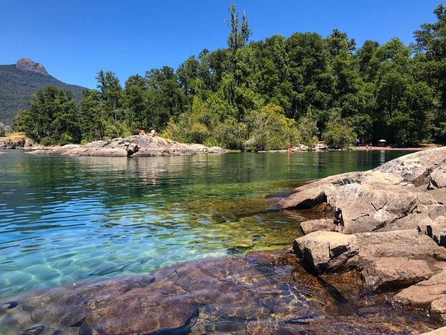
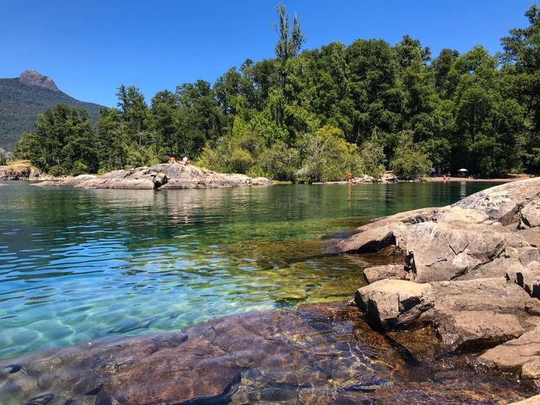
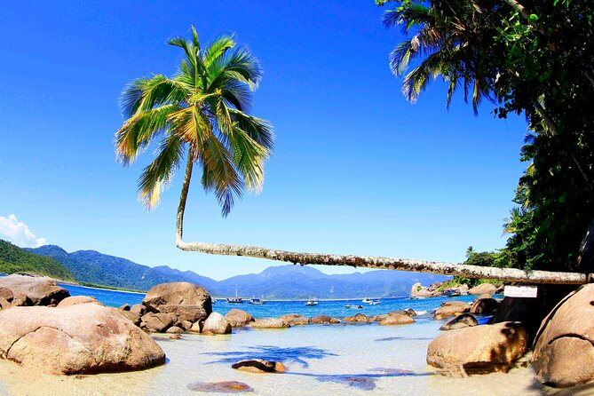
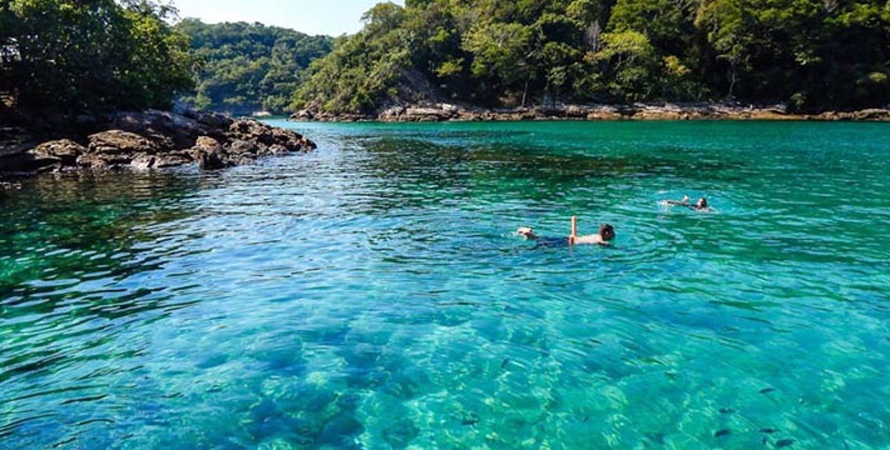
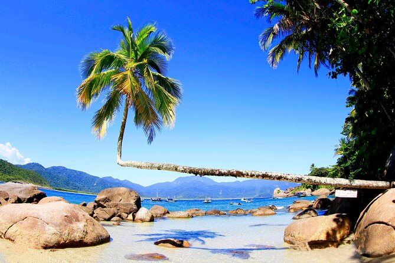
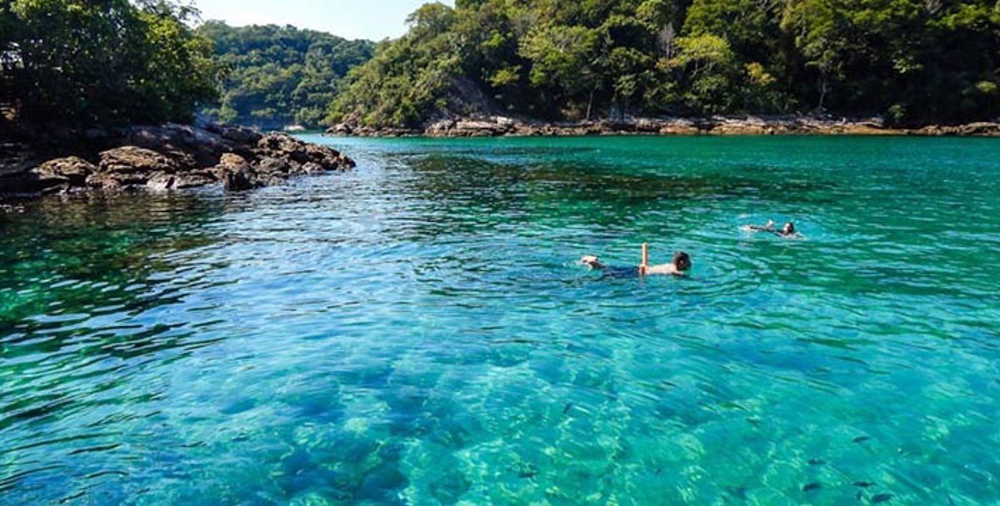
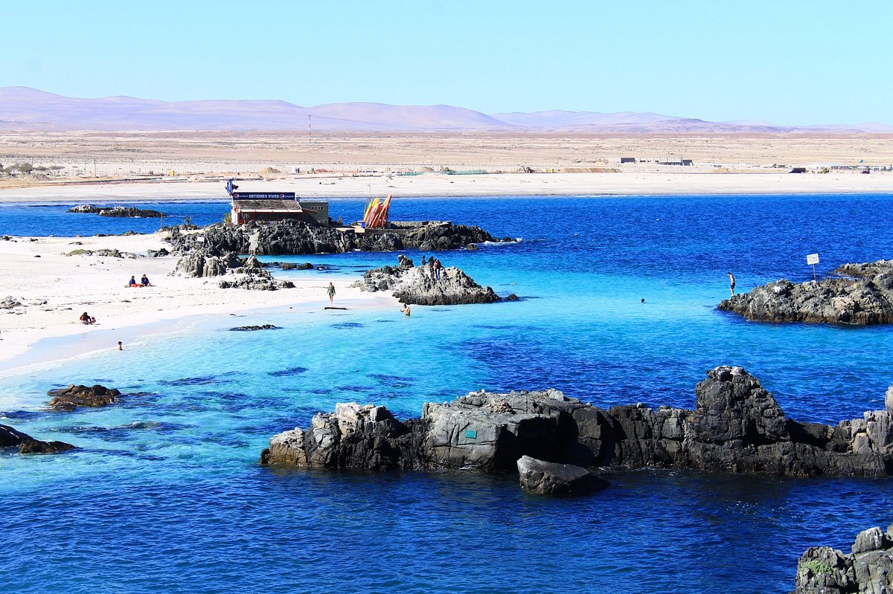
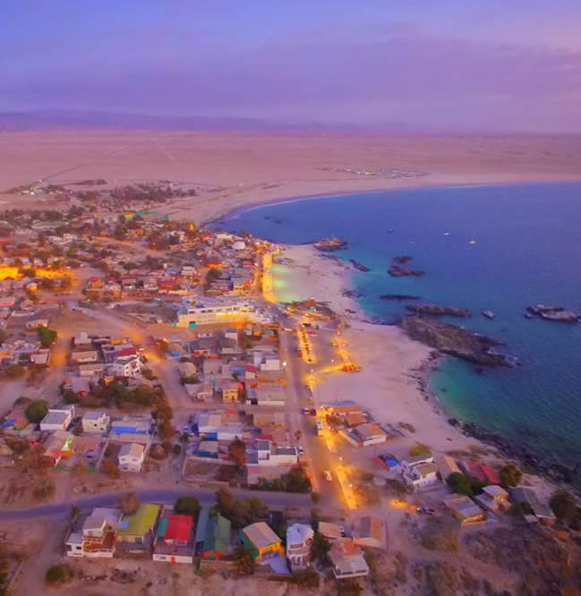
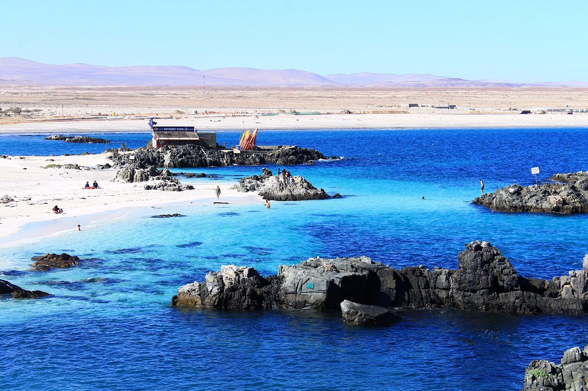
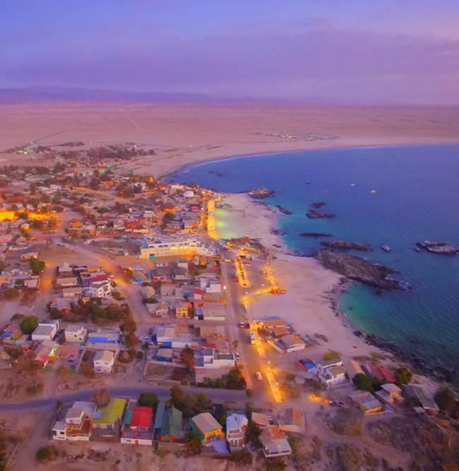

Bem-vindos ao Costa-Coral
Se você é um amante da areia dourada, das águas cristalinas e do sol radiante, chegou ao lugar perfeito. Neste blog, vamos te levar a uma viagem pelas praias mais espetaculares do mundo. Desde recantos escondidos e paradisíacos até destinos turísticos famosos, aqui você encontrará tudo o que precisa para planejar sua próxima escapada dos sonhos. Nosso objetivo é inspirá-lo a explorar novas costas, descobrir joias ocultas e aproveitar ao máximo cada onda e pôr do sol. Além de recomendações de praias, compartilharemos dicas úteis, guias de viagem, atividades imperdíveis e experiências únicas para que sua aventura seja inesquecível. Prepare seu traje de banho, aplique seu protetor solar e acompanhe-nos nesta jornada. O paraíso te espera!
 


 




 


